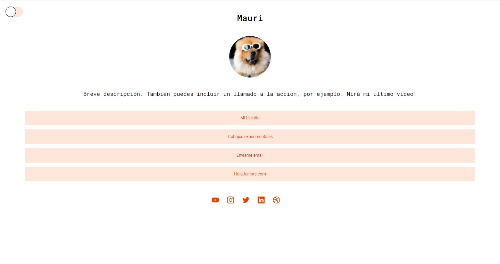
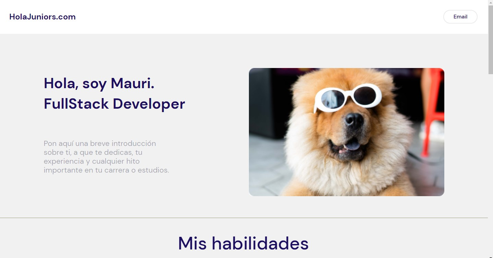
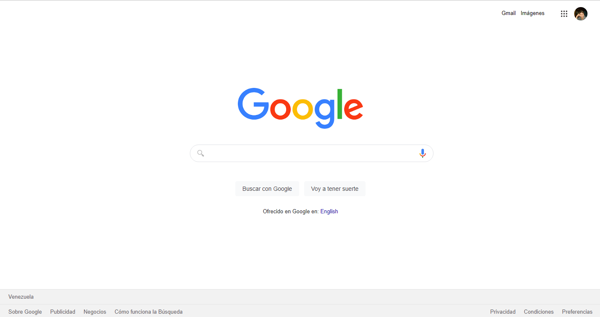
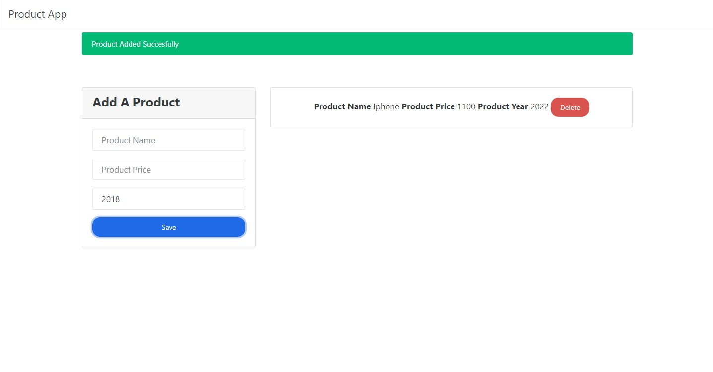
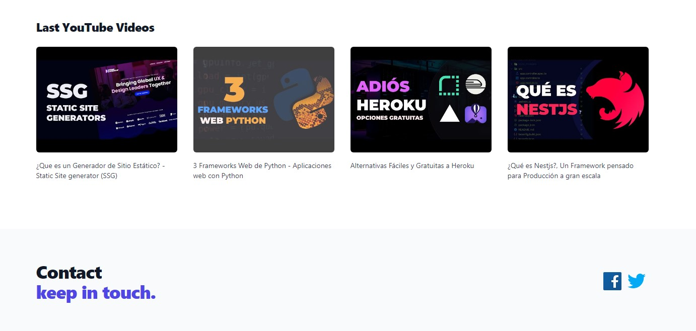
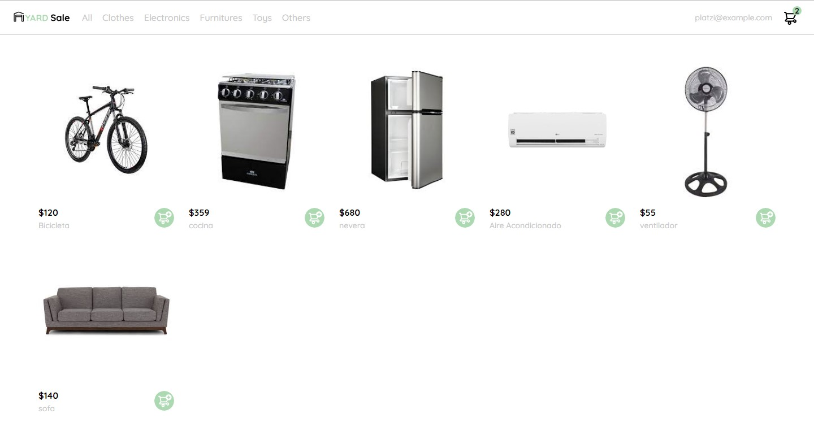
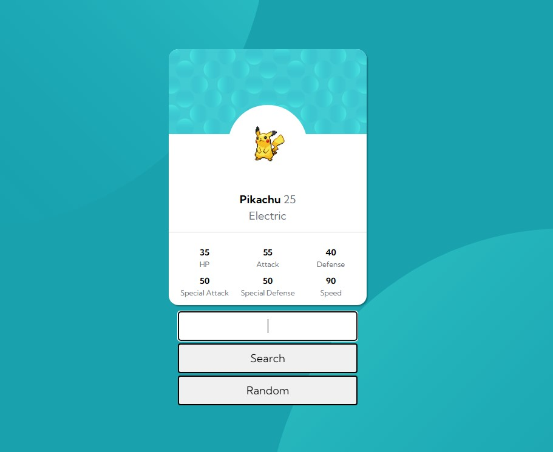

Mi experiencia
Experiencia de anteriores empleos o trabajos experimentales que hayas realizado para aprender (como este). O inventate algo :)

Trabajo real #1
Reto de crear un landing Page por HolaJuniors

Trabajo real #2
Reto de crear un landing por HolaJuniors #2

Trabajo real #3
Proyecto realizado con el curso de Platzi de maquetar un clon de la pagina de Google

Trabajo real #4
Un pequeño proyecto utilizando una API del clima, con un tutorial de la web de FAZTWEB.COM.

Trabajo real #5
Proyecto realizado a traves de un curso de Platzi donde se implemeto las API, el cual este llama a una api de youtube para traer los ultimos videos subidos por un cnala en especifico

Trabajo real #6
Un E-Coomerce realizado con un curso de Platzi, aun se esta trabajando en el proyecto para que tenga mas logica con JavaScript

Trabajo real #7
Uno de mis primeros proyectos realizado por mi propia cuenta, es un buscador de pokemon utilizando una API